B2B: Unclear brand identity post-rebrand
After rebranding from SearchOwl, the business site failed to communicate what Sorcea Labs did, why it was different, or why brands should partner with it.

Personalized Skincare & Market Intelligence Platform
The Challenge
Sorcea Labs needed to build post-rebrand credibility with beauty partners while making personalized skincare discovery feel clearer and more trustworthy for consumers.
3 Designers
1 Developer
2 Co-Founders
UX/UI Design Intern
May – Aug 2025
Key Outcome
The rebrand contributed to a 10% increase in active time across both platforms. By redesigning the B2B site to signal credibility and the B2C platform to build consumer confidence, both audiences had clearer reasons to engage and return.
What I Drove
A beauty-tech startup combining AI and skincare, helping shoppers find personalized products while giving brands real-time market insights.
You are now viewing:
01 Solution
A collaborative redesign, combined with proposals from two other designers.
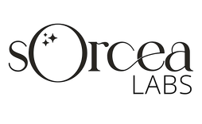
Before
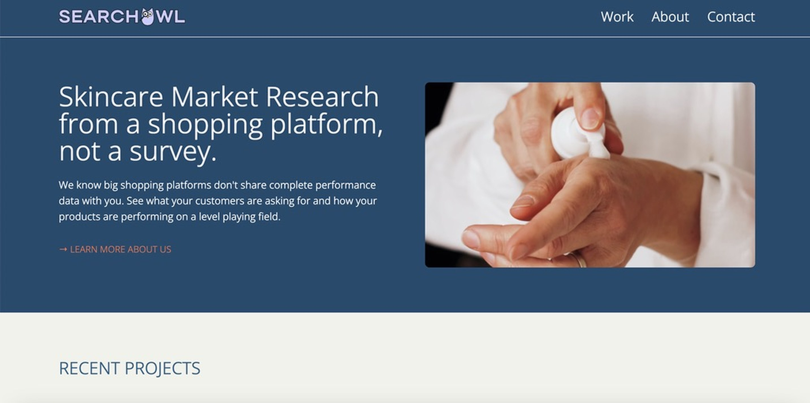
After
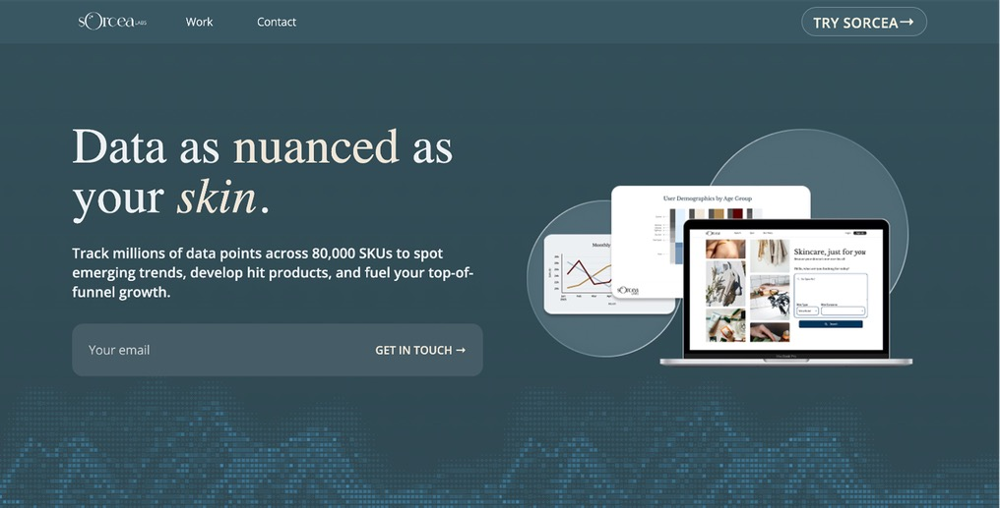
Before
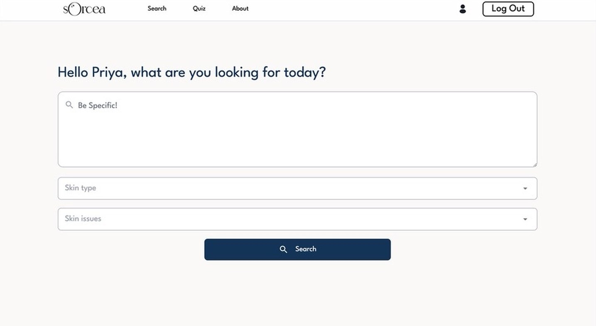
After
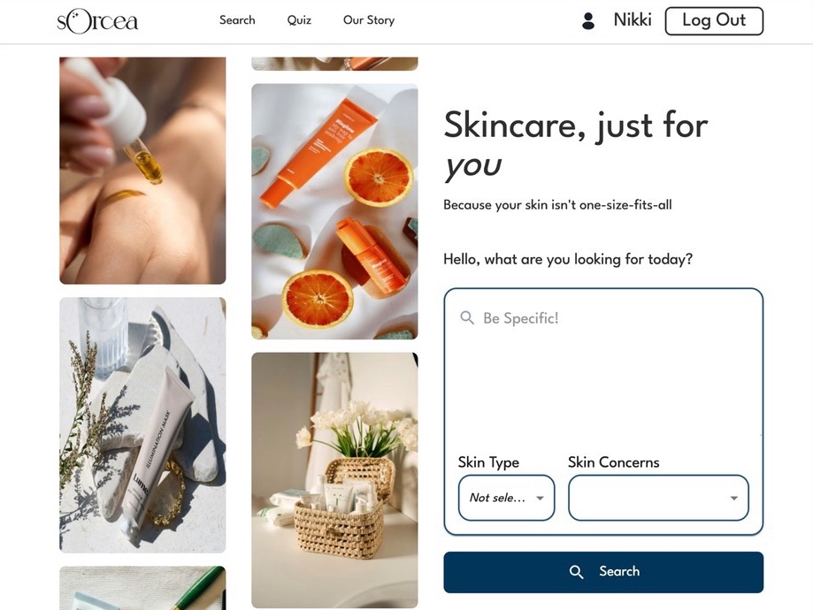
02 Define
Sorcea Labs operates across two distinct user groups with entirely different needs. Designing for both required separate strategies grounded in the same core goal: building trust.
After rebranding from SearchOwl, the business site failed to communicate what Sorcea Labs did, why it was different, or why brands should partner with it.
Skincare consumers felt uncertain about which products would work for them, leading to abandoned searches, endless scrolling, and low purchase confidence.
Based on these challenges, my role focused on two design goals that had to feel cohesive while speaking to entirely different people:
How might we develop a sophisticated, tech-forward identity that communicates value to brands and makes Sorcea Labs feel like a credible, innovative partner?
How might we streamline the shopping experience so users feel guided toward products that actually match their skin's needs?
03 Research
I conducted a SWOT analysis of competitors across both industries to understand what made a site feel "tech-forward" vs. "beauty-driven" and what trust signals each context required.


Key Research Finding
Those two gaps drove both designs: Sorcea Labs needed proof-led credibility; Sorcea needed real skin-profile personalization.
04 Ideation
From competitive research and founder conversations, I anchored my design decisions in a set of principles across both the business site and the skincare platform. Each principle directly addressed a gap identified in the research.
Need clear differentiators, consistent brand identity, and a hero section that communicates value immediately.
A bold, specific tagline and strong hero visuals to capture attention and communicate what makes Sorcea Labs different.
Interactive, dynamic elements position Sorcea Labs as a tech-forward company, not just another analytics dashboard.
Treat personalization as the core experience and guide users toward products that match their specific skin concerns from the first interaction.
A strong first impression built on clear brand values, high-quality visuals, and social proof helps shoppers feel confident in the platform before they even search.
Clean neutral tones, high-quality product imagery, and a calm visual feel signal that Sorcea understands the beauty category and earns the shopper's trust.
05 Design
I approached the redesigns by tailoring each visual system to its audience: building credibility for Sorcea Labs’ B2B beauty-tech brand presence and confidence for the consumer skincare platform.
Sorcea Labs · B2B
Sorcea · B2C
Building credibility and a tech-forward brand presence for beauty industry partners.
Creating a homepage that captured attention while reflecting the beauty-tech brand identity.
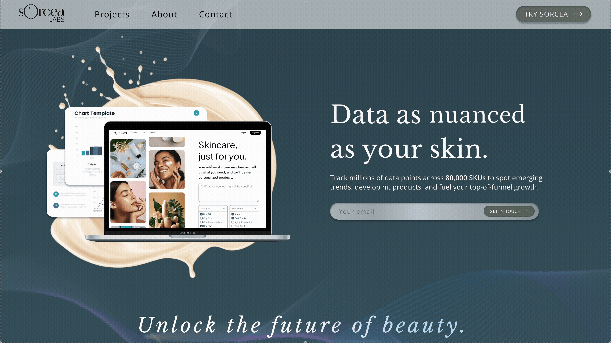
A cohesive color and type system, a dynamic hero font, and a clear "Get in touch" CTA gave partners a confident first impression of the brand.
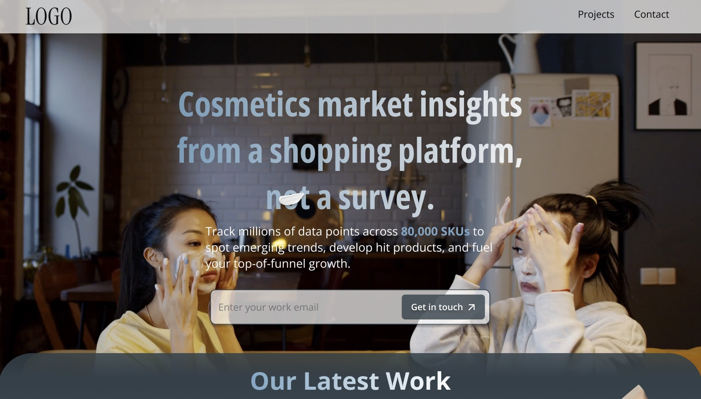
Direct email capture, but a distracting moving background and busy visuals failed to communicate the brand difference.
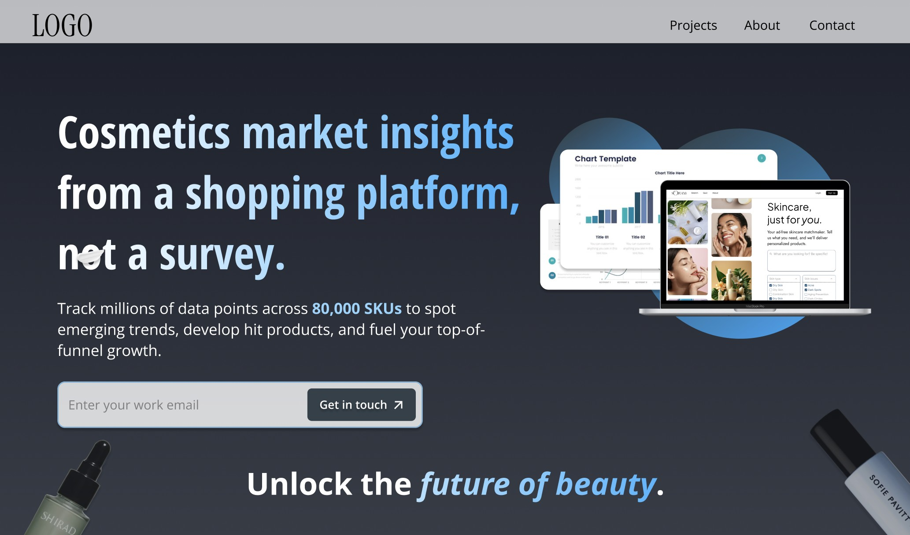
A stronger "Unlock the future of beauty" tagline, a better tech-aligned hero image, and clearer sections improved on the first pass.
Creating a clean, transparent, reliable, and personalized experience for users.
Creating a calm, trustworthy skincare experience where imagery, search, and layout balance beauty aesthetics with the clarity needed to convert shoppers.
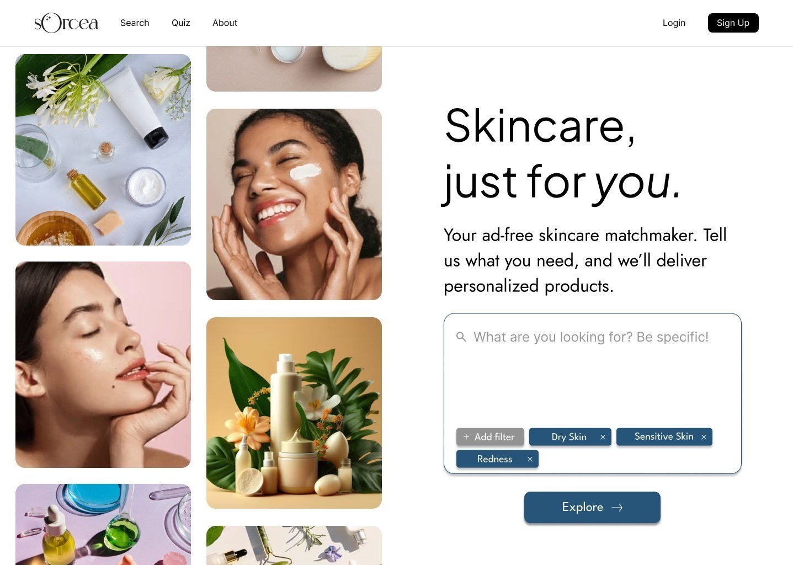
Dynamic, moving images balance product richness with informational content: feels alive without losing clarity.
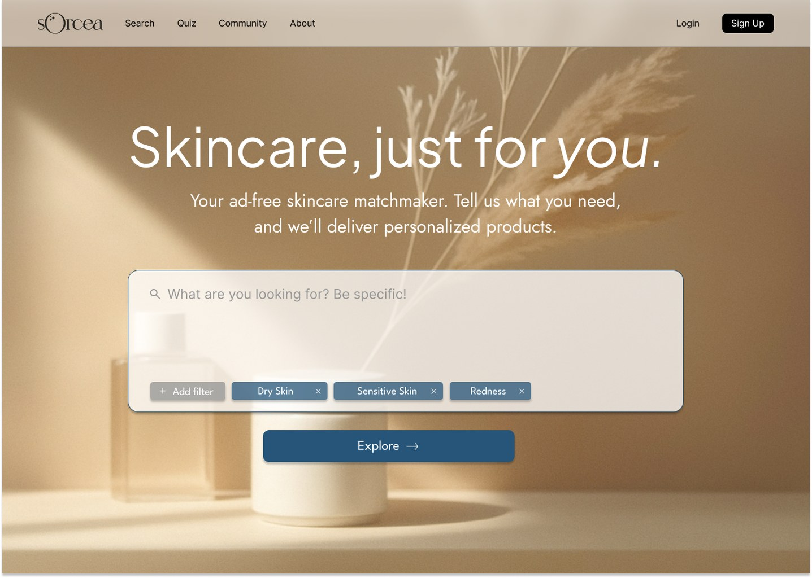
Background was too distracting and competed with product content.
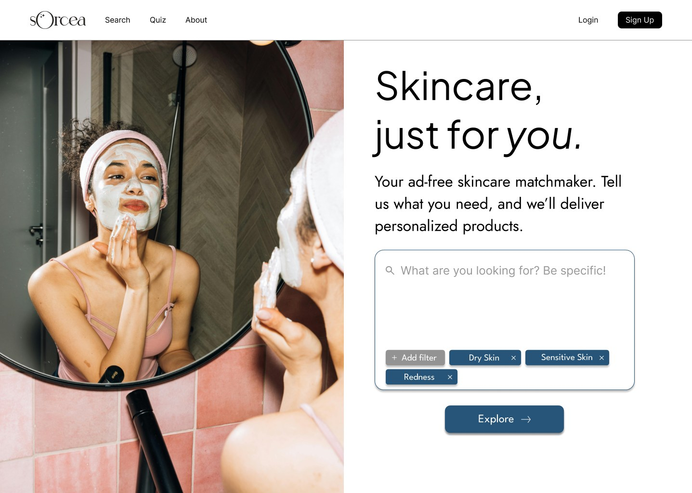
Moving in the right direction, but needed more visual energy to match the brand.
Making filters easy to adjust inline, without extra steps or needing to remember previous selections.

Filters integrated directly into the search bar, making them instantly editable in one place.

Filters locked behind a pop-up created unnecessary friction in the search flow.

Two separate dropdowns added cognitive load: users had to remember their selections across interactions.
06 Impact
While design changes are still rolling out, one early signal stood out:
increase in average active time across both platforms
To fully measure whether the redesigns achieved their trust-building goals across both audiences, I would track:
07 Reflection
Sorcea Labs taught me how to design with business models, founder priorities, and consumer trust in mind. B2B and B2C audiences need different trust signals: one needed to feel tech-forward and credible, the other warm, personal, and easy to use.
It was also my first time working on a full team, which taught me how to integrate feedback and take inspiration from other designers. Some of the strongest decisions came from sharing rough ideas early and building on each other's thinking instead of working alone.
back to top ↑